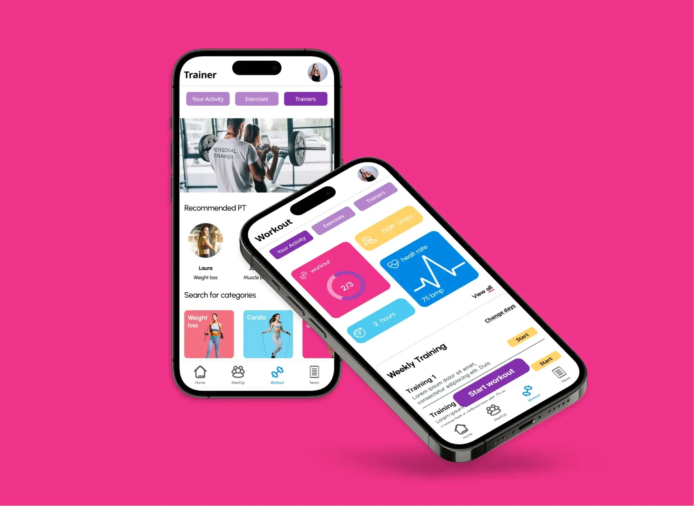
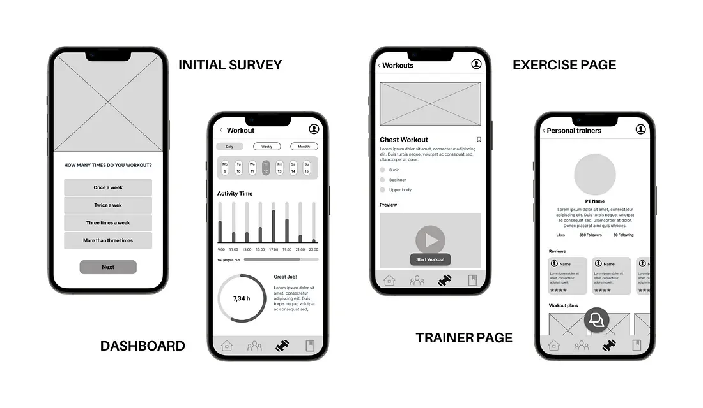
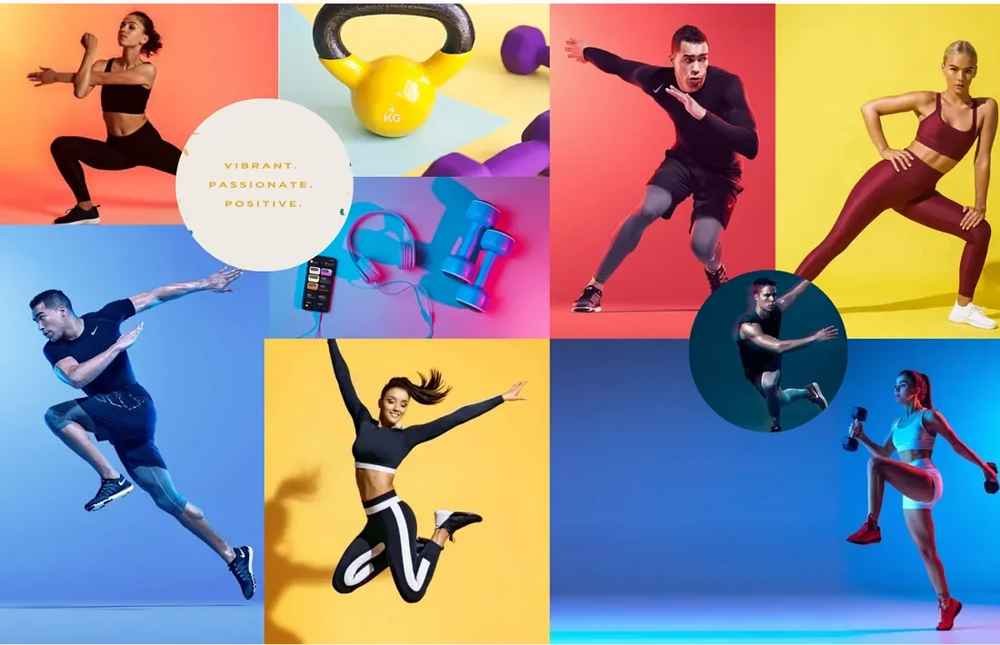
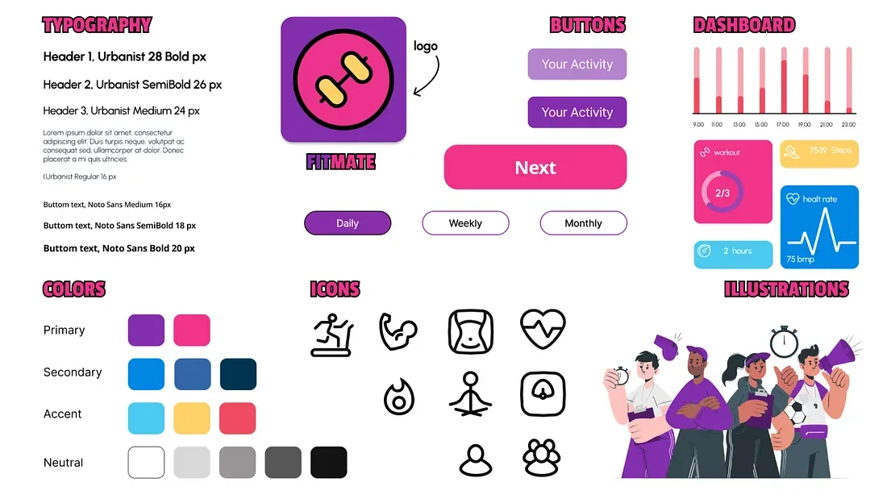
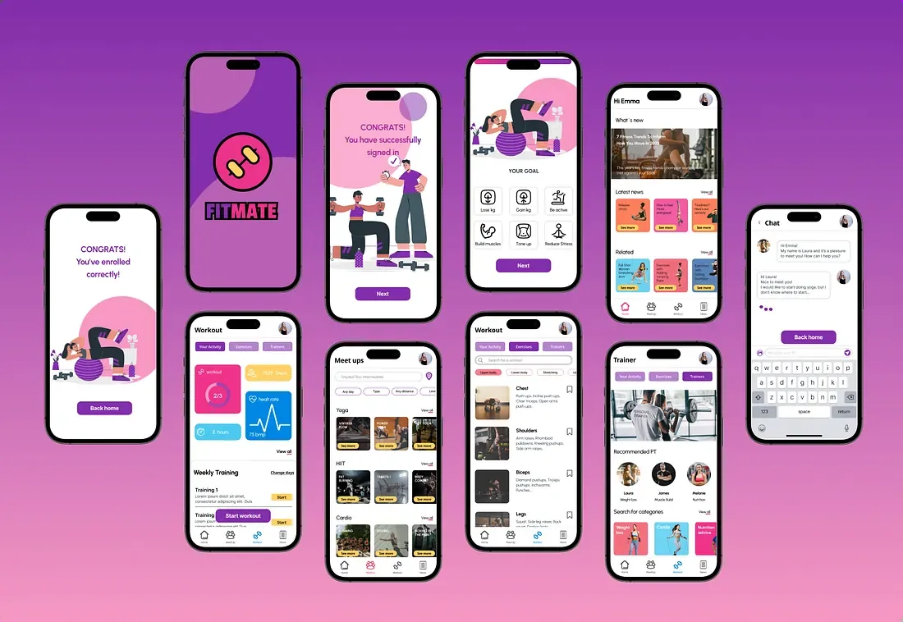
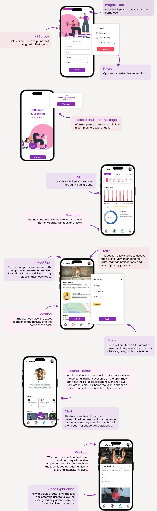
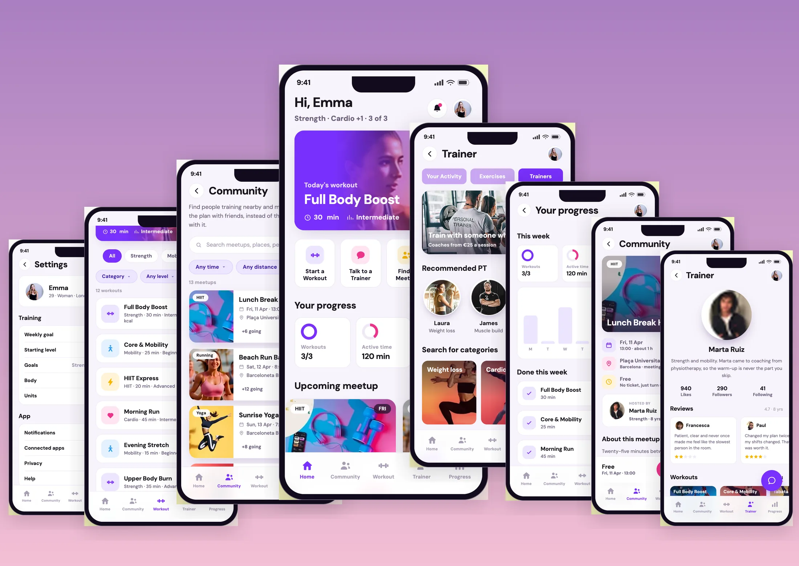
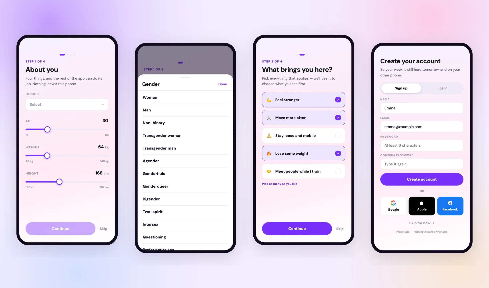
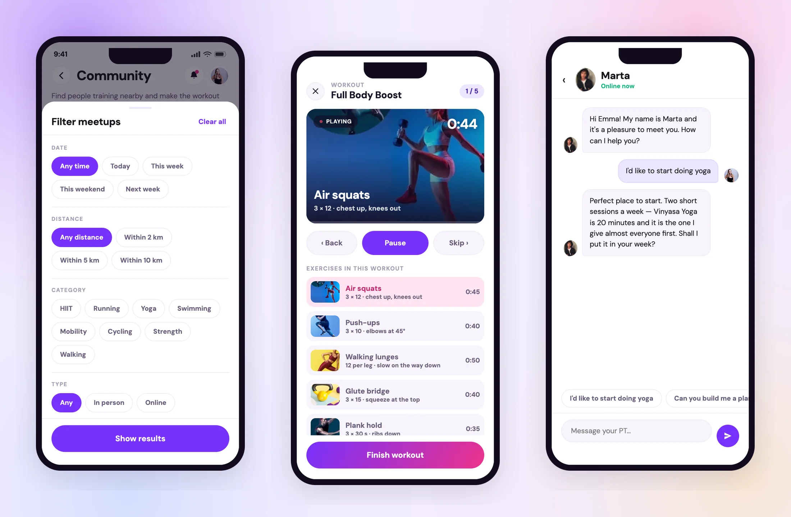

Fitmate
Let's crush our fitness goals together.
Open the prototype ↗ Clickable, in your browser — the rebuild I made after the bootcamp.
Fitness shouldn't feel like another task on your to-do list. Finding the motivation to exercise is easy on Monday morning. Keeping it going is another story.
Fitmate is a wellness app concept designed to make fitness more motivating, personal and social — bringing workouts, personal trainers and fitness meetups into one experience.
The idea was simple: what if staying active didn't have to mean doing it alone?

The problem wasn't knowing what to do
It was actually doing it.
I started by looking at existing fitness apps such as Ejercicios en Casa, Adidas Training and MyFitnessPal. Most of them already did a good job at providing workouts, tracking activity and helping users set goals. But something felt missing.
Fitness isn't only about having access to the right workout. It's also about motivation, accountability and finding something that fits into your actual life. That became the opportunity for Fitmate.
So I started listening
I used surveys and six user interviews to understand how people really approached fitness in their everyday lives. A few patterns quickly became clear.
People struggled to find time. They found it difficult to stay motivated. They wanted more personalised guidance. And many felt that exercising with other people could make the experience more enjoyable — and easier to stick with.
So the challenge wasn't simply how do we help people exercise? It was:
How do we help people keep going?
Meet Emma
30 · Recruiter · London
Emma has a busy professional life and wants to become more consistent with fitness. She doesn't necessarily need another fitness app telling her what to do — she needs something that can adapt to her lifestyle. She wants flexibility, guidance and motivation, without feeling that exercise is taking over her life.
What gets in her way: finding time, staying motivated, choosing the right workout, knowing how to perform exercises correctly, and balancing fitness with work and her social life.
From Monday motivation to a sustainable routine
Mapping Emma's journey helped me see where the experience was breaking down. She could start with good intentions, but everyday life got in the way.
A busy schedule made workouts harder to maintain. A lack of accountability made motivation disappear. Too many choices made it difficult to know where to start.
This led to one of the most important ideas behind Fitmate:
Fitness is easier to maintain when you don't have to do it alone.
What if your fitness app felt more like a community?
This became the foundation of the product. Instead of building another app focused purely on tracking calories, steps or workouts, I wanted Fitmate to connect three things.
- 01 Move Find workouts that fit your goals.
- 02 Connect Meet people through fitness meetups.
- 03 Get support Find personal trainers who can provide guidance.
Everything else came after that.
Four simple ways to keep moving
The experience was organised around four main areas.
- Meetup
- Discover fitness activities and join other people.
- Workout
- Find and follow workouts based on your needs.
- Personal Trainer
- Get more personalised support and guidance.
- Account
- Keep track of your activity and manage your profile.
The goal was to keep the experience simple enough to understand immediately, while still giving users room to explore.
The process, step by step
The short version is above. This is the whole route, in the order I walked it.
Research
- 01 Competitive analysis Ejercicios en Casa, Adidas Training and MyFitnessPal, compared on features, experience, pricing and audience. All three were strong on routines and tracking; none of them treated community as more than posting your progress, and coaching meant a pre-recorded video.
- 02 Survey, in English and Spanish People aged 26 to 35 wanted to train regularly and preferred a gym to working out at home. What stopped them was not knowledge. It was motivation and time.
- 03 Six user interviews The same thing in their own words: accountability from other people, plans that bend to a real week, and feedback from someone who knows what they are looking at.
- 04 Affinity diagram Every quote on its own note, then grouped until four themes held: pain points, content, knowledge, motivation. The shape of the product came out of the grouping rather than out of the brief.
Definition
- 05 User persona The research converged on one person, so I gave her a name and designed against her. Emma, thirty, recruiter, London.
- 06 User journey Mapping her week showed where it broke: the gyms she can afford are far enough away that going costs her an evening, and the evening is usually already promised to someone.
- 07 How Might We, then the problem statement Emma needs a routine that fits her life and keeps her committed, because she wants to improve how she feels while meeting people through exercise.
- 08 MoSCoW and the MVP Everything sorted into must, should, could and won't, and only the musts went into the first version.
Structure
- 09 Site map and user flow Four sections and the paths between them, drawn before a single screen. If the flow needs explaining, the structure is wrong.
- 10 Crazy 8s Eight ideas for a screen in eight minutes. The point is quantity: the first idea is rarely the one worth keeping.
- 11 Low-fidelity wireframes Layout and hierarchy only, no colour and no type. Where should things go, what does the user need first, what can be removed.
- 12 Mid-fidelity wireframes The same screens with real text, icons and components, rebuilt on the feedback the low-fi ones collected.
Visual design and validation
- 13 Visual competitive analysis Nike, Adidas Training and MyFitnessPal again, this time only for colour, type, icons and tone — to know what the category looks like before deciding not to look like it.
- 14 Mood board Bright, bold, in motion. The brief for the brief.
- 15 Style tile Urbanist, purple and pink as the primaries, blue to calm them, yellow and magenta as accents, plus custom icons and illustrations.
- 16 High-fidelity prototype, then testing Built and wired in Figma — including the onboarding survey that sets up the plan — then put in front of people, and the feedback became the roadmap below.

Making fitness feel energetic
I wanted Fitmate to feel positive and approachable rather than clinical or overly serious. The visual direction was built around bold, energetic colours, with purple and pink as the main colours and blue, yellow and magenta as accents.
For typography I chose Urbanist, for its clean and contemporary character. Custom icons and illustrations gave the interface a more distinctive personality.
The idea was to make opening the app feel less like opening a productivity tool — and more like joining something you actually want to be part of.


And then it started to feel real
The final high-fidelity prototype brought the different parts of the experience together. Users could discover workouts, explore fitness meetups, find personal trainers and keep track of their activity inside the same ecosystem.
The interface keeps the most relevant actions close at hand while making the community side visible throughout.

But the first version is never the final version
After building the prototype in Figma I collected feedback and identified what could go further. The next iteration could include:
- More workout routines
- Video and detailed exercise instructions
- More complete trainer profiles
- Weekly and monthly activity statistics
- Improved account settings
- A dedicated news and content section
These became the starting point for the product roadmap.

What happened after the bootcamp
Fitmate was a school project with a deadline, and projects like that usually end where this one did: a Figma prototype and a presentation.
It didn't stay there. I kept building it on my own once the bootcamp was over, now with AI — the same way I built Flagged. What changes is where the iterations happen: instead of linking frames together, every version is an application that actually runs, which is the only way to find out that a flow reads well on a board and badly in a hand.

The onboarding had to do something
In Figma the survey was three screens you clicked through and then forgot about. Running, it has to earn the time it takes, and that turned a step in a presentation into a handful of product decisions.
It opens on About you: gender — picked from a list long enough to name people properly, with a line to describe it yourself, rather than four buttons that cover half of them — then age, weight and height on sliders. After that the goals, which take more than one answer, because a single goal describes nobody.
Then the answers go to work. What you pick sets the weekly target, chooses the workout the home screen suggests and opens the workout list on the category you came for. Nothing is collected and parked in a profile.
And between the last question and the home there is the part every real app has and no Figma file needs: an account. Sign up or log in, with the validation under each field, the three third-party buttons, and a way to skip — because asking someone to commit before they have seen anything is how you lose them.

What only exists once it runs
Three parts of Fitmate only became real when there was something to press.
The filters. On a board a filter is a row of chips. In use, people look for a thing that is near them, this weekend, and free — so Community filters the way a meetup app actually filters: date, distance, category, type, price and sort, in a sheet, with a counter on the button and a way to clear it. Which meant the meetups needed a distance and a date to begin with: the filter forced the data model.
The workout player. "Start workout" used to be a button that led to a screen. Now it leads to the exercises themselves — one after another, each with its own countdown, moving on by itself when the time runs out — and what you finish moves the week on the progress screen.
The trainer. A profile with reviews is easy to draw. A conversation is not: the chat answers, after a pause, with the three dots first, because the waiting is most of what makes it read like a person.

What building it taught me that designing it hadn't
A screen you can only look at hides its own weak spots. The flows that broke were never the ones that looked fragile on the board — they were the ones that assumed data nobody had thought about: a distance, a date, a host, a price.
And the decisions that turned out to matter most were small and unglamorous: letting the goal question take more than one answer, putting a skip on the account screen, making the exercises advance by themselves. None of them would have shown up in a presentation.
What stayed with me
Fitmate taught me that designing a fitness product isn't really about designing workouts. It's about understanding why someone starts, why they stop, and what might make them come back.
The project pushed me to look past features and think about the emotional side of an experience — motivation, confidence, accountability, connection.
Because sometimes the best way to help someone reach a goal isn't to give them more information.
It's to make them want to keep going.
A prototype is meant to be pressed.
Open the prototype ↗The survey, the workout player, the community filters, the trainers and the chat — all of it clickable, running in your browser.
Fitmate was the fourth project of my UX/UI bootcamp at Ironhack, made with Antón and Giulia. The writing here is mine and so is the point of view; the work was ours. The version you can open and press is a later rebuild, made on my own. The full case study is on Medium.
Let's connect.
Currently based in Barcelona — available for remote work
dario.capalbi@gmail.com